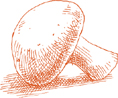
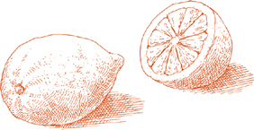
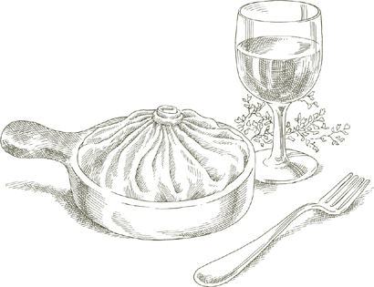
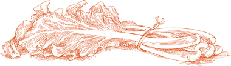

Если вы не знакомы с клюквенными бобами, пожалуйста, посмотрите объяснение, которое прилагается к Супу с пастой и бобами.
Если вы не знакомы с клюквенными бобами, пожалуйста, посмотрите объяснение, которое прилагается к Супу с пастой и бобами.В ДРЕВНЕМ городе каменотесов Сан-Джорджо, высоко в холмах Вальполичеллы, к северу от Вероны, кулинарные навыки семьи Далла Роза отмечаются местными жителями и туристами на протяжении как минимум четырех поколений. Одно из блюд, ради которого люди теперь приходят в их тратторию, — это паста с соусом из одного из основных ингредиентов кулинарии Венето — клюквенных бобов. Клюквенные бобы необходимы для паста э фаджоли, но никто, кроме какого-то неизвестного и забывшегося Далла Роза, не использовал их так вкусно с пастой.
Согласно Лодовико Далла Роза, слово эмбогонэ происходит от диалектного слова для улиток, богони. Он предположил, что бобы, превращаясь в соус на сковороде, своей округлостью и медленным движением, должны были напомнить создателю блюда улиток, которые выскользнули из своих раковин.
Примечание Если вы не знакомы с клюквенными бобами, пожалуйста, посмотрите объяснение, которое прилагается к Супу с пастой и бобами.
На 4 порции
3 фунта (1350 г) свежих клюквенных бобов в неочищенном виде, ИЛИ 1½ чашки сушеных клюквенных ИЛИ красных фасоли, замоченных и приготовленных
Оливковое масло первого холодного отжима, 1 столовая ложка для соуса, 2 столовые ложки для перемешивания пасты
¼ фунта (115 г) панчетты, нарезанной очень мелко в пюре
⅔ чашки (100 г) лука, нарезанного мелко
1 чайная ложка чеснока, нарезанного мелко
Нарезанные листья шалфея, 1 чайная ложка, если свежие, ½ чайной ложки, если сушеные
Нарезанный розмарин, 1 чайная ложка, если свежий, ½ чайной ложки, если сушеный
Соль
Черный перец, свежемолотый
Свежие папарделле, предложенные ниже ИЛИ 1 фунт (450 г) пасты в коробке
½ чашки свеженатертого пармиджано-реджано сыра, плюс дополнительный сыр на столе
Рекомендуемая паста Папарделле, широкая домашняя яичная лапша, на которой подают этот соус в Траттории Далла Роза, и я не вижу, как можно улучшить вкус этой большой лапши, обернутой вокруг насыщенного бобового соуса. Приготовьте папарделле, используя тесто из 3 крупных яиц и примерно 1⅔ чашки муки без отбеливания.
Существенная форма упаковочной, сухой пасты также будет хорошим выбором. Попробуйте ригатони.
1. Если используете свежие бобы, положите их в кастрюлю с 5 см воды, чтобы покрыть. Накройте кастрюлю, включите огонь на минимальный, и готовьте до мягкости, примерно 1 час или меньше.
2. Положите 1 столовую ложку оливкового масла, нарезанную панчетту и лук в сковороду и включите огонь на средний высокий. Готовьте, периодически помешивая, пока лук не станет прозрачным. Добавьте чеснок, шалфей и розмарин и готовьте еще минуту, затем уменьшите огонь до минимума.
3. Слейте приготовленные свежие или сушеные бобы, сохраняя их отвар. Положите бобы в сковороду и разомните большую часть из них — примерно три четверти общего количества — обратной стороной деревянной ложки. Добавьте около ½ чашки бобового отвара в сковороду, чтобы сделать соус немного более жидким. Добавьте соль и несколько щепоток перца, и тщательно перемешайте.
4. Слейте пасту в момент, когда она будет готова, и сразу же перемешайте в теплой сервировочной миске с содержимым сковороды; добавьте оставшиеся 2 столовые ложки оливкового масла, посыпьте свеженатертым пармезаном, перемешайте еще раз и подавайте немедленно. Если соус окажется слишком густым, разбавьте его немного бобовым отваром.
На 4–6 порций
1½ фунта свежей спаржи
Соль
1–1¼ фунта пасты
6 унций вареной не копченой ветчины
2 столовые ложки сливочного масла
1 чашка жирных сливок
⅔ чашки свеженатертого пармиджано-реджано сыра, плюс дополнительный сыр на столе
Рекомендуемая паста Маленькие трубочки макарон наиболее совместимы с этим соусом. Используйте такие упаковочные, сухие формы пасты, как пенне, маккерончини или цити, или домашние гарганелли.
1. Отрежьте 1 дюйм (2.5 см) или больше от оснований спаржи, чтобы открыть влажную часть каждого стебля. Очистите спаржу и промойте её.
2. Выберите сковороду, которая может вместить всю спаржу, лежащую горизонтально. Налейте достаточно воды, чтобы она поднялась на 2 дюйма (5 см) по бокам сковороды, и добавьте 1 столовую ложку соли. Включите средний огонь, и когда вода закипит, положите спаржу и накройте сковороду. Готовьте в течение 4–8 минут после того, как вода снова закипит, в зависимости от свежести и толщины стеблей. Слейте воду со спаржи, когда она станет мягкой, но упругой. Протрите сковороду бумажными полотенцами и отложите в сторону для дальнейшего использования.
3. Когда спаржа остынет до приемлемой температуры, отрежьте кончики стеблей, а остальные стебли нарежьте на кусочки длиной около ¾ дюйма (2 см). Выбросьте любые части стебля, которые всё ещё древесные и жесткие.
4. Нарежьте ветчину длинными полосками шириной около ¼ дюйма (0.6 см). Положите ветчину и сливочное масло в сковороду, где готовилась спаржа, включите средний огонь и готовьте в течение 2–3 минут, не давая ветчине стать хрустящей.
5. Добавьте нарезанные кончики спаржи и стебли, увеличьте огонь до среднего и готовьте в течение 1–2 минут, поворачивая все кусочки спаржи в сливочном масле, чтобы хорошо их покрыть.
6. Добавьте сливки, уменьшите огонь до среднего и готовьте, постоянно помешивая, около полуминуты, пока сливки не загустеют. Попробуйте и при необходимости добавьте соль.
7. Вылейте все содержимое сковороды на приготовленную и слитую пасту, тщательно перемешайте, добавьте ⅔ чашки тертого пармезана, снова перемешайте и подавайте немедленно, с дополнительным тертым сыром на стороне.
На 4 порции
½ фунта (225 г) сладкой колбасы без семян фенхеля, перца чили или других сильных приправ
1½ столовые ложки нарезанного лука
2 столовые ложки сливочного масла
1 столовая ложка оливкового масла
Чёрный перец, свежемолотый
⅔ чашки жирных сливок
Соль
1 фунт (450 г) пасты
Свеженатертый parmigiano-reggiano сыр на столе
Рекомендуемая паста В Болонье, где этот соус популярен, его используют с тонкими, изогнутыми, трубчатыми макаронами, называемыми «крабовая трава», или gramigna. Это идеальный соус для тех форм пасты, чьи изгибы или полости могут захватывать маленькие кусочки колбасы и сливок. Conchiglie и fusilli являются лучшими примерами.
1. Снимите оболочку с колбасы и раскрошите её как можно мельче.
2. Положите нарезанный лук, сливочное масло и оливковое масло в небольшую кастрюлю, включите средний огонь и готовьте, пока лук не станет светло-золотистым. Добавьте раскрошенную колбасу и готовьте в течение 10 минут. Добавьте несколько щепоток перца и все сливки, увеличьте огонь до среднего-высокого и готовьте, пока сливки не загустеют, помешивая один-два раза. Попробуйте и исправьте по вкусу соль.
3. Смешайте соус с отварной пастой и подавайте сразу же с тертым пармезаном на стороне.
На 4 порции
¼ фунта (115 г) нарезанного прошутто ИЛИ деревенского хамона
3 столовые ложки сливочного масла
½ чашки жирных сливок
1 фунт (450 г) пасты
¼ чашки свеженатертого сыра parmigiano-reggiano, плюс дополнительный сыр на столе
Рекомендуемая паста Соус также отлично подходит к домашней fettuccine или tonnarelli, или к зеленым tortellini, а также к коротким трубчатым макаронам, таким как penne или rigatoni.
1. Нарежьте прошутто или хамон на узкие полоски. Положите их в кастрюлю со сливочным маслом, включите средний огонь и готовьте около 2 минут, периодически переворачивая, пока они не подрумянятся со всех сторон.
2. Добавьте жирные сливки и готовьте, часто помешивая, пока не загустеют и не уменьшатся как минимум на одну треть.
3. Смешайте соус с отварной пастой, добавьте ¼ чашки тертого пармезана, снова перемешайте и подавайте сразу же с дополнительным тертым сыром на стороне.
ИТАЛЬЯНСКИЙ историк кулинарии утверждает, что в последние дни Второй мировой войны американские солдаты в Риме, подружившись с местными семьями, приносили им яйца и бекон и просили приготовить из них соус для пасты. Несмотря на мнение историка, как эти классические американские ингредиенты, бекон и яйца, были преобразованы в карбонара, на самом деле не установлено, но нет сомнений в земляном вкусе соуса: он несомненно римский.
Большинство версий карбонара используют бекон, копченый в американском стиле, но в Риме иногда можно встретить соус без бекона вообще, а вместо него с соленым свиным щеками. Он гораздо слаще, чем бекон, чей копченый привкус может утомить вкус. Свиную щека трудно достать за пределами Италии, но вместо нее можно использовать панчетту, которая придаст аналогичный округлый и мягкий вкус. Вы можете приготовить соус как с беконом, так и с панчеттой, и попробовать оба метода, чтобы увидеть, какой из них вам больше понравится.
На 6 порций
½ фунта панчетты, нарезанной одним куском толщиной ½ дюйма (1.25 см), ИЛИ эквивалент в хорошем куске бекона
4 зубчика чеснока
3 столовые ложки оливкового масла первого холодного отжима
¼ чашки сухого белого вина
2 крупных яйца (см. предупреждение о отравлении сальмонеллой)
¼ чашки свеженатертого сыра романо
½ чашки свеженатертого сыра пармиджано-реджано
Черный перец, свежемолотый
2 столовые ложки нарезанной петрушки
1¼ фунта пасты
Рекомендуемая паста Трудно представить, чтобы карбонара подавалась на чем-то, кроме спагетти.
1. Нарежьте панчетту или кусок бекона полосками шириной чуть менее ¼ дюйма (0.6 см).
2. Легко раздавите чеснок ручкой ножа, чтобы он раскололся и кожица loosened, которую вы выбросите. Положите чеснок и оливковое масло в небольшую сковороду и включите средний огонь. Пассеруйте, пока чеснок не станет глубокого золотистого цвета, затем удалите и выбросьте его.
3. Положите полоски панчетты или бекона в сковороду и готовьте, пока они не начнут хрустеть по краям. Добавьте вино, дайте ему покипеть 1–2 минуты, затем выключите огонь.
4. Разбейте 2 яйца в сервировочную миску, в которой вы впоследствии будете перемешивать пасту. Легко взбейте их вилкой, затем добавьте два тертых сыра, обильную порцию перца и нарезанную петрушку. Тщательно перемешайте.
5. Добавьте отваренные и отцеженные спагетти в миску и быстро перемешайте, хорошо покрывая нити.
6. Кратковременно разогрейте панчетту или бекон на сильном огне, выложите все содержимое сковороды в миску, снова тщательно перемешайте и подавайте немедленно.
Рагу, как называют свой знаменитый мясной соус в Болонье, характеризуется мягким, нежным, комфортным вкусом, который любой повар может достичь, следуя нескольким основным пунктам:
• Мясо не должно быть слишком постным; чем больше в нем мраморности, тем слаще будет рагу. Наиболее желаемая часть говядины — это шея лопатки.
• Добавляйте соль сразу при пассеровании мяса, чтобы извлечь его соки для последующей пользы соуса.
• Готовьте мясо в молоке перед добавлением вина и помидоров, чтобы защитить его от кислоты последних.
• Не используйте демиглас или другие концентраты, которые смещают баланс вкусов в сторону резкости.
• Используйте кастрюлю, которая удерживает тепло. Глиняная посуда предпочтительна в Болонье и большинством поваров в Эмилии-Романье, но эмалированные чугунные сковороды или кастрюли с тяжелым дном, состоящим из слоев стальных сплавов, вполне удовлетворительны.
• Готовьте, не накрывая, на самом медленном огне в течение долгого времени; не менее 3 часов необходимо, чем дольше, тем лучше.
2 полные чашки, на около 6 порций и 1½ фунта пасты
1 столовая ложка оливкового масла
3 столовые ложки сливочного масла плюс 1 столовая ложка для перемешивания пасты
½ чашки нарезанного лука
⅔ чашки нарезанного сельдерея
⅔ чашки нарезанной моркови
¾ фунта (340 г) говяжьего фарша (см. примечание выше)
Соль
Чёрный перец, свежемолотый
1 чашка (240 мл) цельного молока
Целый мускатный орех
1 чашка (240 мл) сухого белого вина
1½ чашки (360 г) консервированных импортных итальянских сливовых томатов, нарезанных, с их соком
1¼–1½ фунта (570–680 г) пасты
Свеженатертый пармиджано-реджано сыр на столе
Рекомендуемая паста Нет более идеального сочетания в гастрономии, чем брак болоньезского рагу с домашней болоньезской тальятелле. Не менее классическим является Запечённая зелёная лазанья с мясным соусом по-болоньезски. Рагу восхитительно с тортеллини и безупречно с такими коробочными, сухими пастами, как ригатони, конкилье или фузилли. Удивительно, учитывая популярность блюда в Великобритании и странах Содружества, мясной соус в Болонье никогда не подают с спагетти.
1. Положите оливковое масло, сливочное масло и нарезанный лук в кастрюлю и включите средний огонь. Готовьте и помешивайте лук, пока он не станет прозрачным, затем добавьте нарезанный сельдерей и морковь. Готовьте около 2 минут, помешивая овощи, чтобы хорошо их об coated.
2. Добавьте говяжий фарш, крупную щепотку соли и несколько оборотов перца. Разомните мясо вилкой, хорошо перемешайте и готовьте, пока говядина не потеряет свой сырой красный цвет.
3. Добавьте молоко и дайте ему медленно закипеть, часто помешивая, пока оно полностью не выпарится. Добавьте небольшую терку — около ⅛ чайной ложки — мускатного ореха и перемешайте.
4. Добавьте вино, дайте ему выпариться, затем добавьте томаты и тщательно перемешайте, чтобы все ингредиенты хорошо покрылись. Когда томаты начнут пузыриться, уменьшите огонь, чтобы соус готовился на медленном огне, с редкими пузырьками, пробивающимися на поверхность. Готовьте, без крышки, в течение 3 часов или более, помешивая время от времени. Пока соус готовится, вы, вероятно, заметите, что он начинает подсыхать, и жир отделяется от мяса. Чтобы предотвратить прилипание, продолжайте готовить, добавляя ½ чашки (120 мл) воды по мере необходимости. В конце, однако, не должно остаться воды, и жир должен отделиться от соуса. Попробуйте и исправьте вкус солью.
5. Смешайте с отварной пастой, добавив столовую ложку сливочного масла, и подавайте с freshly grated Parmesan на стороне.
Примечание заранее Если вы не можете следить за соусом в течение 3–4 часов, вы можете выключить огонь, когда вам нужно уйти, и возобновить готовку позже, при условии, что вы закончите соус в тот же день. После завершения вы можете охладить соус в плотно закрытом контейнере на 3 дня или заморозить его. Перед смешиванием с пастой разогрейте его, дав ему покипеть в течение 15 минут и помешивая один или два раза.
Свинина является важной частью культуры Болоньи, её экономики и кухни, и многие повара добавляют немного свинины, чтобы сделать свой рагу более вкусным. Используйте 1 часть фарша из свинины, предпочтительно из шеи или лопатки, к 2 частям говядины, и готовьте мясной соус точно так, как описано в основном рецепте выше.
На 4–6 порций
½ фунта (225 г) свежей куриной печени
2 столовые ложки нарезанного лука-шалота ИЛИ лука
1 столовая ложка оливкового масла
2 столовые ложки сливочного масла
¼ чайной ложки чеснока, очень мелко нарезанного
3 столовые ложки нарезанной панчетты ИЛИ прошутто
4–5 целых листьев шалфея
¼ фунта (115 г) говяжьей грудинки
Соль
Чёрный перец, свежемолотый
1 чайная ложка томатной пасты, растворённой в ¼ чашки сухого белого вермута
1¼ фунта (570 г) домашней пасты
Свеженатёртый пармиджано-реджано сыр на столе
Рекомендуемая паста Здесь у нас великолепный соус для паппарделле, домашних широких лапш, которые заполняют глаза и рот. Его также можно сочетать с Ризотто с пармезаном и соусом из куриной печени.
1. Удалите любые зеленоватые пятна и частицы жира с куриных печенок, промойте их в холодной воде, нарежьте каждую печенку на 3 или 4 кусочка и тщательно обсушите бумажными полотенцами.
2. Положите лук-шалот или лук в кастрюлю или небольшую сковороду вместе с оливковым маслом и сливочным маслом; включите средний огонь. Готовьте и помешивайте лук-шалот или лук, пока он не станет прозрачным. Добавьте нарезанный чеснок и готовьте его недолго, чтобы он не подрумянился, затем добавьте нарезанную панчетту или прошутто и шалфей. Хорошо перемешайте, готовя около минуты или меньше, затем добавьте фарш, крупную щепотку соли и несколько щепоток перца. Разомните мясо вилкой и готовьте, пока оно не потеряет свой сырой красный цвет.
3. Добавьте нарезанные куриные печенки, увеличьте огонь до среднего высокого, тщательно перемешайте и готовьте недолго, пока печенки не потеряют свой сырой красный цвет.
4. Добавьте смесь томатной пасты и вермута и готовьте в течение 5–8 минут, помешивая время от времени. Попробуйте и исправьте вкус, добавив соль.
5. Вылейте все содержимое сковороды на отваренные и отцеженные макароны, хорошо перемешайте, чтобы покрыть все нити, и подавайте сразу же с тертым пармезаном на стороне.
 Особые блюда из пасты
Особые блюда из пасты 
Около 200 тортеллини
ДЛЯ НАЧИНКИ
¼ фунта свинины, предпочтительно с шеи ИЛИ Boston butt
6 унций филе куриной грудки без костей и кожи
2 столовые ложки сливочного масла
Соль
Черный перец, свежемолотый
3 столовые ложки мортаделлы, нарезанной очень мелко
1¼ чашки свежего рикотты
1 желток
1 чашка свеженатертого пармезана
Целый мускатный орех
Домашнее желтое тесто для пасты, приготовленное по указаниям машинного метода, ИЛИ по методу ручного раскатывания, с использованием 4 крупных яиц, примерно 2 чашек муки без отбеливания и 1 столовой ложки молока
Рекомендуемый соус Традиционный способ подачи тортеллини — в бульоне, рассчитывая около 2½ кварты домашнего мясного бульона для приготовления и подачи 100 тортеллини, примерно на 6 порций. Не так традиционно, но все равно очень вкусно — это соус со сливками и маслом, или томатный соус с жирными сливками, или бологнезе. Рассчитывайте около 2 дюжин тортеллини на человека, когда подаете их с соусом. Во всех вышеупомянутых случаях подавайте с тертым пармезаном.
1. Нарежьте свинину и куриную грудку без кожи на кубики размером ½ дюйма.
2. Положите сливочное масло на сковороду и включите средний огонь. Когда пена от масла начнет утихать, добавьте кубики свинины, одну-две щепотки соли и несколько оборотов перца. Готовьте в течение 6–7 минут, поворачивая, чтобы равномерно подрумянить со всех сторон. С помощью шумовки удалите мясо со сковороды и дайте остыть.
3. Добавьте кусочки курицы в сковороду с щепоткой соли и несколькими оборотами перца. Обжарьте курицу со всех сторон, готовя около 2 минут. Удалите ее из сковороды с помощью шумовки и дайте остыть вместе со свининой.
4. Когда мясо остынет достаточно, чтобы с ним можно было работать, нарежьте свинину и курицу вместе до зернистой, слегка грубой консистенции. Можно использовать кухонный комбайн, но не превращайте мясо в кашу.
5. Положите нарезанное мясо в миску и добавьте мортаделлу, рикотту, желток, тертый пармезан и небольшую терку — примерно ⅛ чайной ложки — мускатного ореха. Тщательно перемешайте, пока все ингредиенты не соединятся. Попробуйте и исправьте вкус по соли.
6. Приготовьте желтое тесто для пасты по машинному методу или по методу ручного раскатывания. Нарежьте его на тортеллини и начините их вышеупомянутой смесью. При варке пасты добавьте 1 столовую ложку оливкового масла в воду.

Около 130 тортеллини, 5 до 6 порций
ДЛЯ НАЧИНКИ
¼ фунта свинины, предпочтительно с шеи ИЛИ Бостонской лопатки
¼ фунта телячьей лопатки
1 столовая ложка сливочного масла
Соль
Черный перец, свежемолотый
1 столовая ложка мортаделлы, очень мелко нарезанной
½ чашки свежего рикатты
⅓ чашки свеженатертого сыра пармиджано-реджано
1 желток
Целый мускатный орех
ДЛЯ ТЕСТА
Домашнее зеленое паста-тесто, приготовленное машинным способом, ИЛИ ручным способом, с использованием 2 крупных яиц, ⅓ упаковки замороженного шпината ИЛИ 6 унций свежего шпината, соли, примерно 1½ чашки необработанной муки и 1 столовой ложки молока
Рекомендуемый соус Соус с прошутто и сливками; Соус со сливками и сливочным маслом; Томатный соус с жирными сливками. Всегда подавайте с тертым пармезаном.
1. Нарежьте свинину и телятину тонкими ломтиками, затем нарежьте их на кусочки размером примерно 1 дюйм (2.5 см) и квадратной формы. Держите два вида мяса отдельно.
2. Положите сливочное масло и свинину в небольшую сковороду и включите средний огонь. Готовьте в течение 5 минут, подрумянивая мясо с обеих сторон и часто переворачивая.
3. Добавьте телятину и готовьте ее 1½ минуты или меньше, подрумянивая с обеих сторон. Добавьте соль, несколько щепоток перца, тщательно перемешайте, чтобы все хорошо покрыть, затем удалите все мясо из сковороды, используя шумовку, чтобы весь жир остался в сковороде.
4. Когда мясо остынет достаточно, чтобы с ним можно было работать, нарежьте свинину и телятину вместе до зернистой, слегка грубой консистенции. Можно использовать кухонный комбайн, но не доводите мясо до состояния пюре.
5. Положите нарезанное мясо в миску и добавьте мортаделлу, рикотту, тертый сыр, яичный желток и небольшую щепотку — около ⅛ чайной ложки — мускатного ореха. Тщательно перемешайте, пока все ингредиенты не объединятся. Попробуйте и скорректируйте по соли и перцу.
6. Приготовьте зеленое паста-тесто по машинному методу или по методу ручного раскатывания. Нарежьте его, нафаршируйте вышеупомянутой смесью и придайте форму тортеллини. При варке пасты добавьте 1 столовую ложку оливкового масла в воду.
Около 140 тортеллини, 6 порций
ДЛЯ НАЧИНКИ
1 маленький лук
1 средняя морковь
1 маленький стебель сельдерея
Кусок рыбы весом 1 фунт (450 г), в одном куске, если возможно, предпочтительно морской окунь, ИЛИ другая рыба с сопоставимым нежным вкусом и сочным мясом
2 столовые ложки винного уксуса
Соль
2 желтка
3 столовые ложки свеженатертого пармезана
⅛ чайной ложки сушеного майорана ИЛИ несколько свежих листьев
Целый мускатный орех
Черный перец, свежемолотый
2 столовые ложки жирных сливок
ДЛЯ ПАСТЫ
Домашнее желтое тесто для пасты, приготовленное машинным методом, ИЛИ ручным методом, с использованием 3 крупных яиц, примерно 1–2 чашки муки без отбеливания и 1 столовой ложки молока
Рекомендуемый соус Соус с креветками и сливками или Томатный соус с жирными сливками. Вы можете подавать его с тертым сыром или без него.
1. Очистите лук и морковь, промойте морковь и сельдерей под холодной водой.
2. Налейте в кастрюлю достаточно воды, чтобы позже покрыть рыбу. Добавьте лук, морковь и сельдерей, доведите до кипения.
3. Добавьте рыбу, уксус и соль, накройте кастрюлю. Когда вода снова закипит, отрегулируйте огонь так, чтобы рыба готовилась на медленном, устойчивом кипении. Готовьте около 8 минут, в зависимости от толщины рыбы.
4. С помощью шумовки или лопатки перенесите рыбу на тарелку. Удалите кожу, желеобразные части, центральную кость и аккуратно извлеките все мелкие кости, которые вы можете найти. Не беспокойтесь о том, чтобы сохранить кусок рыбы целым, потому что вскоре вам придется его разломать для начинки.
5. Положите рыбу в миску и разомните ее вилкой. Добавьте яичные желтки, тертый пармезан, майоран, небольшую терку—примерно ⅛ чайной ложки—мускатного ореха, всего лишь несколько щепоток перца и жирные сливки. Смешайте все ингредиенты вилкой до равномерного соединения. Попробуйте и исправьте по вкусу солью.
6. Приготовьте желтое паста-тесто, используя машинный метод или метод ручного раскатывания. Нарежьте его, нафаршируйте рыбной начинкой и придайте форму тортеллини. При варке пасты добавьте 1 столовую ложку оливкового масла в воду.
Около 140 тортелли, 6 порций
ДЛЯ НАЧИНКИ
½ чашки нарезанной петрушки
1 ½ чашки свежей рикотты
1 чашка свеженатертого пармиджано-реджано сыра
Соль
1 яичный желток
Целый мускатный орех
ДЛЯ ПАСТЫ
Домашнее желтое паста-тесто, приготовленное по машинному методу, ИЛИ по методу ручного раскатывания, с использованием 3 крупных яиц, 1⅔ чашки муки без отбеливания и 1 столовой ложки молока
Рекомендуемый соус Первым выбором является Соус из сливок и масла, вторым — Томатный соус с жирными сливками. Подавайте с тертым пармезаном.
1. Положите петрушку, рикетту, тертый пармезан, соль, яичный желток и небольшую тертую щепотку — около ¼ чайной ложки — мускатного ореха в миску и перемешайте вилкой до равномерного соединения всех ингредиентов. Попробуйте и исправьте по вкусу, добавив соль.
2. Приготовьте желтое паста-тесто, используя машинный метод или метод ручного раскатывания. Нарежьте его на квадратные тортельони со сторонами 5 см и начините смесью рикетты и петрушки. При варке пасты добавьте 1 столовую ложку оливкового масла в воду.
Около 140 тортельони, 6 порций
ДЛЯ НАЧИНКИ
2 фунта (900 г) мангольда, если стебли очень тонкие, ИЛИ 2½ фунта (1.1 кг), если стебли широкие, ИЛИ 2 фунта (900 г) свежего шпината
Соль
2½ столовые ложки мелко нарезанного лука
3½ столовые ложки нарезанного прошутто ИЛИ панчетты ИЛИ вареной ветчины без копчения
3 столовые ложки сливочного масла
1 чашка свежей рикетты
1 яичный желток
⅔ чашки свеженатертого пармиджано-реджано сыра
Целый мускатный орех
ДЛЯ ПАСТЫ
Домашнее желтое тесто для пасты, приготовленное машинным способом, ИЛИ ручным способом, с использованием 3 крупных яиц, примерно 1⅔ чашки муки без отбеливания и 1 столовой ложки молока
Рекомендуемый соус Соус с маслом и шалфеем, Соус с маслом и пармезаном, или Томатный соус с жирными сливками. Подавайте с тертым пармезаном.
1. Отделите листья швейцарского мангольда от стеблей или шпината от стеблей и выбросьте поврежденные, вялые или потемневшие листья. Если у вас есть зрелый мангольд с крупными белыми стеблями, сохраните стебли и используйте их в гратен из стеблей швейцарского мангольда с пармезаном. Замочите листья в бассейне холодной воды, поднимая мангольд и меняя воду несколько раз, пока на дне бассейна не останется следов земли.
2. Аккуратно соберите листья, не тряся их, и положите в кастрюлю с той водой, которая на них осталась. Добавьте крупные щепотки соли, чтобы сохранить зеленый цвет овоща, накройте кастрюлю, включите средний огонь и готовьте до мягкости, примерно 12 минут, в зависимости от свежести мангольда или шпината. Слейте воду, и как только будет достаточно холодно, чтобы можно было держать, аккуратно отожмите, чтобы удалить как можно больше влаги, и очень мелко нарежьте.
3. В небольшой сковороде нагрейте лук, панчетту и сливочное масло на среднем огне. Готовьте, помешивая, пока лук не станет прозрачным, затем добавьте нарезанный мангольд или шпинат. Готовьте 2–3 минуты, пока все сливочное масло не впитается.
4. Выложите все содержимое сковороды в миску. Добавьте рикетту, желток, тертый пармезан и небольшую щепотку — около ⅛ чайной ложки — мускатного ореха, и перемешайте вилкой, пока все ингредиенты не объединятся. Попробуйте и исправьте вкус солью.
5. Приготовьте желтое тесто для пасты машинным способом или ручным способом. Нарежьте его на квадратные тортельони со сторонами по 5 см и нафаршируйте их овощной начинкой. При варке пасты добавьте 1 столовую ложку оливкового масла в воду.
КОГДА ВЫ ГОВОРИТЕ каппеллачи в Италии, это понимается как квадратная паста с тайной сладкой начинкой из тыквы. Это специальность северо-восточной части Эмилия-Романьи, в частности, города Феррара.
Тыква, используемая там, известна как цука барука, сладкая и сочная с бархатистой мякотью. У нее нет аналогов среди других тыкв. Когда я впервые записала рецепт в Классической итальянской кулинарной книге, я обнаружила, что наиболее близко могу воспроизвести начинку в Северной Америке, не используя ни один из местных сортов тыквы, ни один из которых не сопоставим по вкусу и текстуре с цука барука, а используя сладкий картофель вместо этого.
Вы должны выбрать правильный сорт сладкого картофеля: не тот, что с бледной, серовато-желтой кожурой, а темный с красновато-оранжевой мякотью, иногда ошибочно называемый ямсом. При приготовлении он очень сладкий и влажный, так же хорош для каппеллачи, как и лучший цука барука.
Около 140 каппеллачи, 6 порций
1¾ фунта (около 800 г) сладкого картофеля с оранжевой мякотью, см. вступительные замечания выше
Пара импортных итальянских амаретти печений
1 желток яйца
3 столовые ложки нарезанной панчетты
1½ чашки свеженатертого сыра пармиджано-реджано
3 столовые ложки очень мелко нарезанной петрушки
Целый мускатный орех
Соль
ДЛЯ ТЕСТА
Домашнее желтое паста-тесто, приготовленное машинным способом, ИЛИ ручным способом, с использованием 3 крупных яиц, примерно 1⅔ чашки муки без отбеливания и 1 столовой ложки молока
Рекомендуемый соус Соус из сливочного масла и сыра Пармезан, или Соус из сливок и сливочного масла. Подавайте с тертым Пармезаном.
1. Разогрейте духовку до 230°C (450°F).
2. Запекайте картофель на среднем уровне горячей духовки. Через 20 минут уменьшите температуру до 400° (200°C) и готовьте еще 35–40 минут, пока картофель не станет очень мягким при прокалывании вилкой.
3. Выключите духовку. Уберите картофель и разрежьте его пополам вдоль. Верните картофель в духовку, разрезом вверх, оставив дверцу духовки немного приоткрытой. Уберите через 10 минут, когда он немного подсохнет.
4. Измельчите печенье амаретти в порошок с помощью кухонного комбайна или ступки с пестиком.
5. Очистите картофель и протрите его через картофельную мельницу в миску. Добавьте порошковые печенья, яичный желток, панчетту, тертый пармезан, петрушку, небольшую терку—примерно ⅛ чайной ложки—мускатного ореха и соль. Перемешайте вилкой до равномерного соединения всех ингредиентов.
6. Приготовьте желтое паста-тесто с помощью машинного метода или метода ручного раскатывания. Нарежьте его на квадратные равиоли со сторонами по 2 дюйма (5 см) и начините их смесью из сладкого картофеля. При варке пасты добавьте 1 столовую ложку оливкового масла в воду.

На 6 порций
Соль
Средне-густой соус бешамель, используя 2 чашки молока, 4 столовые ложки (½ пачки) сливочного масла, 3 столовые ложки муки и ¼ чайной ложки соли
6 столовых ложек свеженатертого сыра пармиджано-реджано
Керамическая форма для запекания, подходящая для подачи на стол
Сливочное масло для смазывания и выкладывания в форму
1. Разогрейте духовку до 400° (200°C).
2. Отварите ригатони в большом количестве кипящей подсоленной воды. Слейте, когда они будут очень твердыми, чуть менее приготовленными, чем аль денте, так как они будут готовиться дополнительно в духовке. Переложите в миску для смешивания.
3. Добавьте мясной соус, бешамель и 4 столовые ложки тертого пармезана к пасте. Тщательно перемешайте, чтобы хорошо покрыть пасту и равномерно распределить соусы.
4. Легко смажьте форму для запекания сливочным маслом. Выложите все содержимое миски, выровняв его лопаткой. Посыпьте 2 столовыми ложками тертого пармезана и выложите кусочки масла. Поставьте форму на верхнюю полку разогретой духовки и запекайте 10 минут, пока не образуется небольшая корочка сверху. После того как вытащите из духовки, дайте ригатони немного постоять перед подачей на стол.
Правильно приготовленная лазанья состоит из нескольких слоев нежного, почти невесомого теста, разделенных слоями ароматной, но не подавляющей начинки из мяса, артишоков, грибов или других изысканных смесей. Единственное тесто, подходящее для лазаньи, – это тонкое тесто, свежее, сделанное дома. Если вы еще не освоили раскатку теста вручную, машинный метод выполняет эту задачу полностью удовлетворительно с почти нулевыми усилиями.
Возможно, потребуется немного больше времени, чтобы прокатать тесто для пасты через машину, чем сходить на рынок и купить коробку готового теста, но ничего упакованного в коробку не может сравниться со вкусом лазаньи, которую вы можете приготовить в своей кухне. Использование громоздкой, купленной в магазине лазаньи может сэкономить немного времени, но вы будете горько разочарованы результатом.
На 6 порций
Мясной соус болоньезе, в полном объеме
Соус бешамель, с использованием 3 чашек молока, 6 столовых ложек сливочного масла, 4½ столовых ложек муки и ¼ чайной ложки соли
Домашнее зеленое тесто для пасты, сделанное машинным методом, ИЛИ вручную, с использованием 2 крупных яиц, ⅓ упаковки замороженного шпината ИЛИ 170 г свежего шпината, соли и примерно 1½ чашки муки без отбеливания
1 столовая ложка соли
2 столовые ложки сливочного масла и еще немного для смазывания формы для запекания размером 9 на 12 дюймов (23 на 30 см), не менее
6 см высотой ⅔ чашки свеженатертого сыра пармиджано-реджано
1. Приготовьте мясной соус и отложите в сторону или, если используете соус, который вы заранее заморозили, разморозьте около 600 мл, аккуратно разогрейте и отложите в сторону.
2. Приготовьте бешамель, оставляя ее довольно жидкой, немного как сметана. Когда она будет готова, держите ее теплой в верхней части водяной бани, с очень низким огнем. Если на поверхности образуется пленка, просто перемешайте ее, когда будете готовы использовать.
3. Сделайте зеленое тесто для пасты либо машинным методом, либо вручную. Раскатайте его так тонко, как только сможете, любым из методов. Если вы делаете тесто с помощью машины, оставьте полоски такой ширины, как они выходят из валков, и нарежьте их на длину 25 см. Если делаете вручную, нарежьте пасту на прямоугольники шириной 11 см и длиной 25 см.
4. Поставьте миску с холодной водой рядом с плитой и положите несколько чистых, сухих полотенец на рабочую поверхность. Доведите 4 кварты воды до быстрого кипения, добавьте 1 столовую ложку соли, и как только вода снова закипит, опустите в нее 4 или 5 нарезанных полосок пасты. Готовьте очень коротко, всего несколько секунд после того, как вода снова закипит после того, как вы опустили пасту. Извлеките полоски с помощью шумовки или лопатки с отверстиями и опустите их в миску с холодной водой. Поднимите полоски, одну за другой, промойте их под холодной проточной водой и аккуратно потрите, как будто вы делаете деликатную стирку. Очень осторожно сожмите каждую полоску в руках, затем разложите ее на полотенце для высыхания. Когда вся паста будет приготовлена таким образом, 4 или 5 полосок за раз, и разложена для высыхания, аккуратно промокните ее сверху другим полотенцем.
Пояснительная заметка Мытье, отжимание и сушка пасты для лазаньи – это нечто вроде неудобства, но это необходимо. Сначала вы окунаете частично приготовленную пасту в холодную воду, чтобы мгновенно остановить процесс приготовления. Это важно, потому что если паста для лазаньи не будет оставаться очень плотной на этом этапе, она станет ужасно мягкой позже, когда будет запекаться. И вам нужно будет затем смыть влажный крахмал с ее поверхности, иначе тесто прилипнет к полотенцу, на котором оно раскладывается для сушки, и порвется, когда вы будете готовы его использовать.
5. Разогрейте духовку до 200°C (400°F).
6. Щедро намажьте дно формы для лазаньи сливочным маслом и около 1 столовой ложки бешамеля. Выложите на дно формы один слой пасты, подрезая его по размеру формы, чтобы края соприкасались, оставляя не более 0.6 см для перекрытия.
7. Смешайте мясной соус и бешамель и равномерно распределите тонкий слой этой смеси по пасте. Посыпьте тертым пармезаном, затем добавьте еще один слой пасты, подрезая его по размеру, как и прежде. Повторяйте процедуру распределения соуса и смеси бешамеля, затем посыпайте пармезаном. Используйте обрезки теста, чтобы заполнить пробелы, если необходимо. Постройте как минимум 6 слоев пасты. Оставьте достаточно соуса, чтобы очень тонко распределить его по верхнему слою. Посыпьте пармезаном и выложите кусочки масла сверху.
8. Выпекайте на верхней полке разогретой духовки, пока не образуется легкая золотистая корочка сверху. Это должно занять от 10 до 15 минут. Если после первых нескольких минут вы не видите никаких признаков образования корочки, увеличьте температуру духовки еще на 10–20°C (50–75°F). Не выпекайте дольше 15 минут в общей сложности.
9. Достаньте из духовки и дайте настояться около 10 минут, затем подавайте к столу прямо из формы.
Примечание заранее Лазанья может быть приготовлена заранее до этого момента, за 2 дня. Храните в холодильнике под плотно закрытой пленкой.

На 6 порций
680 г свежих, крепких белых шампиньонов
3 столовые ложки оливкового масла
3 столовые ложки сливочного масла плюс немного сливочного масла для смазывания и выкладывания в форму для запекания размером 23 на 30 см и высотой не менее 6 см
⅓ чашки мелко нарезанного лука
Два маленьких пакета ИЛИ 60 г сушеных порчини, восстановленных
Фильтрованная вода от замачивания грибов
⅓ чашки консервированных импортных итальянских сливы, слитых и нарезанных
2 столовые ложки нарезанной петрушки
Соль
Черный перец, свежемолотый из мельницы
Домашнее желтое тесто для пасты, приготовленное машинным способом, ИЛИ ручным способом, с использованием 3 крупных яиц и примерно 1⅔ чашки муки без отбеливания
¾ фунта (340 г) не копченого вареного окорока
Соус бешамель, с использованием 2 чашек молока, 4 столовых ложек сливочного масла, 3 столовых ложек муки и ¼ чайной ложки соли
⅔ чашки свеженатертого пармезана, плюс дополнительный сыр на столе
1. Быстро промойте свежие грибы под холодной проточной водой. Дайте стечь и тщательно вытрите мягкой тканью или бумажными полотенцами. Нарежьте их очень тонкими длиной ломтиками, оставляя ножки прикрепленными к шляпкам.
2. Выберите сковороду для пассерования, которая сможет вместить все свежие грибы без переполнения. Вложите оливковое масло, 3 столовые ложки сливочного масла и нарезанный лук, и включите средний огонь.
3. Готовьте, помешивая, пока лук не станет прозрачным. Добавьте восстановленные сушеные порчини, отфильтрованную воду от их замачивания, нарезанные помидоры и петрушку. Тщательно перемешайте, чтобы покрыть все ингредиенты, накройте сковороду слегка приоткрытой крышкой и уменьшите огонь до среднего.
4. Когда жидкость в сковороде полностью испарится, добавьте нарезанные свежие грибы, соль и несколько толчков перца, и увеличьте огонь до высокого. Готовьте, не накрывая, в течение 7–8 минут, пока вся жидкость, выделяемая свежими грибами, не испарится. Попробуйте и исправьте по вкусу с солью и перцем, перемешайте, выключите огонь и отложите в сторону.
5. Приготовьте желтое тесто для пасты либо машинным способом, либо ручным способом. Следуя инструкциям в рецепте для зеленой лазаньи, нарежьте тесто на полоски лазаньи, предварительно отварите их и разложите сушиться на тканевых полотенцах.
6. Разогрейте духовку до 200°C (400°F).
7. Нарежьте окорок очень тонкими полосками, соломкой.
8. Приготовьте соус бешамель. Когда он будет готов, держите его теплым в верхней части водяной бани, с очень низким огнем. Если на поверхности образуется пленка, просто перемешайте ее, когда будете готовы использовать.
9. Щедро намажьте дно формы для лазаньи сливочным маслом и немного соусом бешамель. Выложите дно одним слоем полосок пасты, подрезая их, чтобы они подходили к форме, краями друг к другу, оставляя не более ¼ дюйма (0.6 см) для перекрытия.
10. Смешайте грибы со всеми, кроме 2 или 3 столовых ложек соуса бешамель, затем распределите тонкий слой смеси по пасте. Посыпьте несколько полосок окорока по соусу, затем посыпьте немного тертым пармезаном. Накройте еще одним слоем пасты, подрезая его, как и раньше; используйте обрезки теста, чтобы заполнить пробелы, если необходимо. Повторите последовательность смеси грибов и бешамеля, окорока и тертого сыра. Продолжайте накладывать слои пасты и начинки до минимума 6 слоев пасты. На верхний слой распределите только оставшийся соус бешамель, посыпьте оставшимся пармезаном и выложите около 2 столовых ложек масла.
11. Выпекайте на верхней полке предварительно разогретой духовки, пока не образуется легкая золотистая корочка сверху. Это должно занять от 10 до 15 минут. Если после первых нескольких минут вы не видите никаких признаков начала образования корочки, увеличьте термостат еще на 50° до 75°. Не выпекайте дольше 15 минут в целом.
12. Выньте из духовки и дайте постоять около 10 минут, затем подавайте на стол прямо из формы, с тертым пармезаном сбоку.
Заметка заранее Лазанья может быть завершена за 2 дня до этого момента. Храните в холодильнике под плотно закрытой пленкой.

На 6 порций
4–5 средних артишоков
½ лимона
Соль
3 столовые ложки сливочного масла, плюс немного сливочного масла для смазывания и выкладывания в форму для запекания размером 9 на 12 дюймов (23 на 30 см), высотой не менее 2½ дюймов (6.5 см)
Соус бешамель, используя 2 чашки молока, 4 столовые ложки (½ пачки) сливочного масла, 3 столовые ложки муки и ¼ чайной ложки соли
Домашнее желтое тесто для пасты, приготовленное в машинном режиме, ИЛИ вручную, используя 3 крупных яйца и примерно 1⅔ чашки муки без отбеливания
⅔ чашки свеженатертого сыра пармиджано-реджано
1. Очистите артишоки от всех жестких частей. В процессе работы натирайте срезанные артишоки лимоном, чтобы они не потемнели.
2. Нарежьте каждый очищенный артишок вдоль на 4 равные части. Удалите мягкие, закрученные листья с колючими кончиками у основания и срежьте пушистую «трубку» под ними. Нарежьте части артишока вдоль на как можно более тонкие ломтики и положите их в миску с водой, смешанной с соком половины лимона.
3. Слейте артишоки и тщательно промойте в свежей воде, затем положите их в сковороду с солью, 3 столовыми ложками сливочного масла и достаточным количеством воды, чтобы покрыть, и включите средний огонь. Готовьте на медленном, но стабильном кипении, пока вся вода не выпарится, и артишоки не станут слегка коричневыми. Проткните артишоки вилкой. Если они не полностью мягкие, добавьте немного воды и продолжайте готовить еще некоторое время, позволяя всей воде испариться. Когда артишоки будут готовы, выложите все содержимое сковороды в миску и отложите в сторону.
4. Приготовьте бешамель, поддерживая ее средней густоты, как густые сливки. Отложите 4 или 5 столовых ложек, а остальное соедините с артишоками в миске.
5. Приготовьте желтое тесто для пасты либо в машинном режиме, либо вручную. Следуя инструкциям в рецепте зеленой лазаньи, нарежьте тесто на полоски лазаньи, предварительно отварите их и разложите сушиться на полотенцах.
6. Разогрейте духовку до 400°.
7. Щедро намажьте дно формы для лазаньи сливочным маслом и немного бешамелем. Выложите дно одним слоем полосок теста, подрезая их, чтобы они подходили по размеру, не оставляя более ¼ дюйма (0.6 см) для перекрытия.
8. На тесто равномерно распределите тонкий слой смеси артишоков и бешамеля, и посыпьте тертым пармезаном. Накройте еще одним слоем теста, подрезая его, как и прежде; используйте обрезки теста, чтобы заполнить пробелы, если это необходимо. Продолжайте чередовать слои теста с покрытиями из бешамеля и артишоков, всегда посыпая сыром перед тем, как накрыть новым слоем теста. Не стройте менее 6 слоев теста.
9. На верхнем слое распределите 4 или 5 столовых ложек бешамеля, которые вы отложили. Выложите кусочки сливочного масла и посыпьте оставшимся тертым пармезаном.
10. Выпекайте на верхней полке разогретой духовки до образования легкой золотистой корочки сверху. Это займет от 10–15 минут. Если после первых нескольких минут вы не видите признаков образования корочки, увеличьте температуру еще на 50°–75°. Не выпекайте дольше 15 минут в общей сложности.
11. Выньте из духовки и дайте постоять около 10 минут, затем подавайте на стол прямо из формы, с тертым пармезаном сбоку.
Заранее Вы можете подготовить артишоки до этого момента за несколько часов заранее.
Заранее Лазанья может быть завершена за день до этого момента. Храните в холодильнике под плотно закрытой пленкой.

На Итальянской Ривьере делают плоскую пасту, которая намного шире самых широких лапшей, но немного меньше классической лазаньи из Болоньи. В отличие от болонской лазаньи, она только варится, а не бланшируется и не запекается. На генуэзском диалекте она называется piccagge, что означает салфетка или кухонное полотенце. Piccagge почти всегда подают с рикоттой и песто, что делает это одно из самых легких и свежих блюд из пасты для лета.
На 6 порций
Домашнее желтое тесто для пасты, приготовленное машинным способом, ИЛИ ручным способом, с использованием 3 крупных яиц и примерно 1⅔ чашки муки без отбеливания
2 столовые ложки соли
1 столовая ложка оливкового масла
Свеженатертый пармезан на столе
1. Приготовьте желтое тесто для пасты либо машинным способом, либо ручным способом. Нарежьте тесто на прямоугольные полоски шириной около 3½ дюймов (8.9 см) и длиной 5 дюймов (12.7 см). Разложите их на столе, застеленном чистыми, сухими полотенцами.
2. Приготовьте рикотту и песто.
3. Доведите до кипения 4–5 кварты воды. Добавьте 2 столовые ложки соли и 1 столовую ложку оливкового масла. Когда вода снова закипит, положите половину пасты. (Не рекомендуется добавлять всю пасту сразу, так как широкие полоски могут прилипнуть друг к другу.)
4. Как только первая партия пасты будет готова аль денте, извлеките её с помощью шумовки и выложите на теплое блюдо для подачи. Возьмите ложку горячей воды из кастрюли с пастой и используйте её, чтобы разбавить песто. Распределите половину песто по пасте на блюде.
5. Опустите оставшуюся пасту в кастрюлю, слейте воду, когда она будет готова, выложите её на блюдо поверх предыдущего слоя пасты, накройте оставшимся песто и подавайте сразу же с тертым пармезаном сбоку.
Примечание Если паста очень свежая, вы можете готовить её в две партии, как предложено выше, потому что она готовится так быстро, что первая партия не успеет остыть к моменту, когда будет готова вторая партия. Если паста немного сухая, она будет готовиться дольше, поэтому вам нужно готовить две партии одновременно в двух отдельных кастрюлях.
ТЕПЛЫЕ, свернутые в рулетики пачки пасты, мяса и сыра, называемые каннеллони, являются одним из самых изящных и приятных способов использования домашнего теста для пасты. Это совсем не сложно сделать, и результат может быть неизменно успешным, если помнить одно основное правило. Не думайте о каннеллони как о трубке, содержащей один сосискообразный комок начинки. Перед тем как свернуть пасту, начинка должна быть равномерно распределена по ней в тонком, прилипшем слое, не толще самой пасты. Затем тесто сворачивается в рулет, начинка равномерно распределяется по всему рулету.
На 6 порций
Соус бешамель, с использованием 2 чашек молока, 4 столовых ложек (½ пачки) сливочного масла, 3 столовых ложек муки и ¼ чайной ложки соли
ДЛЯ НАЧИНКИ
1 столовая ложка сливочного масла
1½ столовых ложки мелко нарезанного лука
170 г молотого говяжьего мяса
Соль
½ чашки нарезанной не копченой вареной ветчины
1 желток
Целый мускатный орех
1½ чашки свеженатертого пармезана
1¼ чашки свежей рикорты
ДЛЯ СОУСА
2 столовые ложки сливочного масла
1 столовая ложка мелко нарезанного лука
6 унций (170 г) говяжьей грудинки
Соль
½ чашки консервированных импортных итальянских сливовых помидоров, нарезанных, с соком
ДЛЯ ПАСТЫ
Домашнее желтое тесто для пасты, приготовленное машинным способом, ИЛИ ручным способом, с использованием 3 крупных яиц и примерно 1⅔ чашки муки без отбеливания

1. Приготовьте соус бешамель, сделав его довольно жидким, с консистенцией сметаны. Когда он будет готов, держите его теплым в верхней части водяной бани, с очень низким огнем. Перемешайте его перед использованием.
2. Чтобы приготовить начинку: Положите столовую ложку сливочного масла и нарезанный лук в небольшую сковороду для пассерования, включите средний огонь и готовьте лук, пока он не станет прозрачным. Добавьте фарш. Уменьшите огонь до среднего и низкого, разомните мясо вилкой и готовьте, не давая ему подрумяниться. После того как мясо потеряет свой сырой красный цвет, готовьте еще 1 минуту, помешивая два или три раза.
3. Переложите мясо в миску, используя шумовку, чтобы оставить весь растопленный жир в сковороде. Добавьте одну или две щепотки соли, нарезанную ветчину, яичный желток, небольшую терку—примерно ⅛ чайной ложки—мускатного ореха, тертый Пармезан, рикетту и ¼ чашки соуса бешамель. Перемешайте вилкой, пока все ингредиенты не объединятся. Попробуйте и исправьте по вкусу, добавив соль.
4. Чтобы приготовить соус: Положите 2 столовые ложки сливочного масла и нарезанный лук в кастрюлю, включите средний огонь и готовьте лук, пока он не станет светло-золотистым. Добавьте мясо, разминая его вилкой. Уменьшите огонь до среднего и низкого, готовьте мясо, пока оно не потеряет свой сырой цвет, добавьте соль и нарезанные помидоры с их соком, и отрегулируйте огонь так, чтобы соус готовился на самом медленном кипении. Готовьте в течение 45 минут, помешивая время от времени. Попробуйте и исправьте по вкусу, добавив соль.
5. Чтобы приготовить пасту: Приготовьте желтое тесто для пасты с помощью машины или вручную, раскатывая его так тонко, как это возможно. Нарежьте пасту на прямоугольники размером 3 дюйма на 4 дюйма.
6. Доведите воду до кипения. На соседнем рабочем столе разложите чистые, сухие полотенца. Поставьте миску с холодной водой недалеко от плиты. Следуя инструкциям в рецепте для зеленых лазаньи, бланшируйте, промойте и разложите полоски пасты на полотенцах.
7. Разогрейте духовку до 400°.
8. Обильно намажьте дно формы для запекания сливочным маслом.
9. Чтобы приготовить каннеллони: Нанесите 1 столовую ложку соуса бешамель на обеденную тарелку. Положите одну из полосок пасты на бешамель, поворачивая ее, чтобы покрыть всю нижнюю сторону. На верхней стороне пасты распределите около столовой ложки начинки, достаточно, чтобы тонко покрыть, оставив открытой границу шириной ½ дюйма по кругу. Аккуратно сверните пасту, как рулет, начиная с ее более узкой стороны. Поместите рулет в форму, его перекрывающий край должен быть вниз. Продолжайте, пока не используете всю пасту или всю начинку. Время от времени добавляйте больше бешамель на дно обеденной тарелки, но оставьте немного в запасе. Можно плотно уложить каннеллони в форму для запекания, но не накладывайте их друг на друга.
10. Нанесите мясной соус на каннеллони, равномерно покрывая их. Нанесите оставшуюся бешамель на соус, посыпьте тертым Пармезаном и выложите кусочки сливочного масла сверху.
11. Выпекайте на верхней полке предварительно разогретой духовки, пока не образуется легкая золотистая корочка сверху. Это должно занять от 10 до 15 минут, но не выпекайте дольше 15 минут. После того как вынете из духовки, дайте каннеллони постоять не менее 10 минут, затем подавайте на стол прямо из формы для запекания.
Заметка заранее Каннеллони можно приготовить заранее, за два дня до этого момента. Храните в холодильнике под плотно закрытой пленкой.
В И ТАЛИИ мы называем это ротоло; это начинается как большой рулет из пасты, завернутый вокруг вкусной начинки из шпината и ветчины, завернутый в марлю и отваренный, а затем, когда остынет, нарезается, поливается соусом и слегка подрумянивается в горячей духовке. Это замечательное блюдо для буфета, столь же привлекательное по вкусу, как и по внешнему виду.
На 6 порций

Томатный соус с луком и сливочным маслом, половина количества рецепта
ДЛЯ НАЧИНКИ
2 фунта (900 г) свежего шпината ИЛИ 2 упаковки по 10 унций (280 г) замороженного листового шпината, размороженного
Соль
2 столовые ложки мелко нарезанного лука
3 столовые ложки сливочного масла
3 столовые ложки мелко нарезанной панчетты
1 полная чашка свежего рикатты
1 чашка свеженатертого сыра пармиджано-реджано
Целый мускатный орех
1 желток
ДЛЯ ТЕСТА
Домашнее желтое тесто, приготовленное машинным способом, ИЛИ ручным способом, с использованием 3 крупных яиц и примерно 1–1.5 чашки (150–180 г) муки без отбеливания
Марля
Соль
Соус бешамель, используя 1 чашку молока, 2 столовые ложки сливочного масла, 1½ столовые ложки муки и ⅛ чайной ложки соли
⅓ чашки свеженатертого пармезана
Около 2 столовых ложек сливочного масла для смазывания формы для запекания
1. Приготовьте томатный соус, используя только половину рецепта.
2. Если используете свежий шпинат: Замочите его в нескольких сменах воды и варите с солью до мягкости. Слейте воду, и как только шпинат остынет, аккуратно отожмите его в руках, чтобы удалить как можно больше влаги. Нарежьте его довольно крупно и отложите в сторону.
Если используете размороженный листовой шпинат: Варите в закрытой кастрюле с солью около 5 минут. Слейте воду, когда остынет, отожмите всю влагу, которую сможете, и нарежьте крупно.
3. Положите нарезанный лук и сливочное масло для начинки в сковороду или небольшую сковороду для пассерования, включите средний огонь и пассеруйте лук до светло-золотистого цвета. Добавьте нарезанную панчетту. Готовьте около полминуты, помешивая, чтобы хорошо покрыть, затем добавьте нарезанный шпинат. Тщательно перемешайте один-два раза и готовьте 2 минуты или более, пока шпинат не впитает все сливочное масло.
4. Переложите все содержимое сковороды в миску, добавьте рикорту, 1 чашку тертого пармезана, небольшую терку — около ⅛ чайной ложки — мускатного ореха и желток яйца. Хорошо перемешайте вилкой, пока все ингредиенты начинки не объединятся. Попробуйте и исправьте вкус по соли.
5. Приготовьте желтое паста-тесто с помощью машины или вручную, раскатывая его так тонко, как это возможно.
6. Если готовите пасту с помощью машины: Вам нужно соединить все полоски пасты, чтобы сделать один большой лист. Легко смочите край одной полоски водой, затем положите край другой полоски поверх, слегка перекрывая его, примерно на ⅛ дюйма. Проведите большим пальцем вдоль всей длины края, сильно надавливая на два края, чтобы соединить их. Разгладьте неровности с помощью скалки. Повторите операцию с другой полоской пасты, продолжая, пока все тесто не будет соединено в один лист. Уберите неровные края с помощью кондитерского колеса или ножа.
Если готовите пасту вручную: Когда вы раскатали один тонкий лист пасты, переходите к следующему шагу.
7. Распределите начинку из шпината по пасте, начиная примерно на 7.5 см от края, ближайшего к вам. Распределите ее тонким слоем, чтобы покрыть весь лист теста, кроме 7.5 см бортика рядом с вами и 0.6 см бортика по другим сторонам. Поднимите край 7.5 см бортика и сложите всю ширину бортика поверх начинки. Сложите еще раз и еще раз, пока весь лист пасты не будет свободно свернут.
8. Плотно заверните пасту в марлю, завязав оба конца крепко кухонной нитью. Если у вас нет кастрюли для варки рыбы, выберите кастрюлю, которая сможет вместить пасту в 3–4 квартах воды. Доведите воду до кипения, добавьте 1 столовую ложку соли, и когда вода снова закипит, аккуратно опустите в нее рулет пасты. Отрегулируйте огонь, чтобы готовить на стабильном, но умеренном кипении в течение 20 минут. Поднимите пасту, поддерживая ее двумя ложками или лопатками, чтобы убедиться, что она не разрывается посередине. Уберите марлю, пока паста еще горячая, и отложите рулет в сторону, чтобы он остыл.
9. Разогрейте духовку до 200°C (400°F).
10. Пока паста остывает, приготовьте соус бешамель, доведя его до средней густоты. Когда он будет готов, смешайте его с ранее приготовленным томатным соусом.
11. Когда паста остынет и станет плотной, нарежьте ее, как ростбиф, на ломтики толщиной 2 см (¾ дюйма).
12. Выберите форму для запекания, которая может вместить ломтики пасты в один слой. Легко намажьте дно формы соусом. Выложите ломтики пасты в форму, располагая их так, чтобы они немного перекрывали друг друга, как черепица. Вылейте оставшуюся смесь соуса и бешамеля на пасту, посыпьте ⅓ чашки тертого пармезана и аккуратно выложите кусочки сливочного масла сверху.
13. Запекайте на верхней полке духовки в течение 10–15 минут, пока не образуется легкая золотистая корочка сверху. Выньте из духовки и дайте настояться в течение 10 минут перед подачей на стол. Подавайте прямо из формы для запекания.
Заметка заранее Блюдо можно полностью собрать до этого момента за несколько часов до подачи, но не на ночь. Не refrigerate, так как приготовленный шпинат приобретает кислый, металлический вкус в холодильнике.

BEFORE студенческих беспорядков конца 1970-х, ресторан Al Cantunzein в Болонье, вероятно, был величайшим рестораном пасты, который когда-либо существовал. Среди тридцати или сорока видов пасты, которые он подавал, самой божественной была scrigno di venere, сокровищница Венеры. «Коробочка» была сформирована из маленькой обертки желтой пасты, завернутой вокруг коллекции съедобных «драгоценностей»: зеленого феттучини, ветчины, диких грибов, трюфелей.
Рецепт, хотя и не особенно сложный с точки зрения техники, требует значительной организации для сборки. Внимательное прочтение его сначала поможет вам собрать его гладко позже.
На 6 порций
Домашнее зеленое тесто для пасты, приготовленное машинным методом, ИЛИ методом ручного раскатывания, с использованием 2 крупных яиц, ⅓ упаковки замороженного листового шпината ИЛИ 170 г свежего шпината, соли и примерно 1½ чашки муки без отбеливания.
ДЛЯ СОУСА ФЕТТУЧИНИ
3 столовые ложки сливочного масла
2 столовые ложки нарезанного лука-шалота ИЛИ лука
Два небольших пакетика ИЛИ 60 г сушеных порчини, восстановленных
Фильтрованная вода от замачивания грибов
⅔ чашки не копченого вареного ветчины, нарезанного полосками по 0.6 см
1 чашка жирных сливок
⅓ чашки свеженатертого сыра пармиджано-реджано
ПО ЖЕЛАНИЮ: ½ унции (или больше, если позволяет бюджет) свежего ИЛИ консервированного белого трюфеля
ОБОЛОЧКИ ДЛЯ ПАСТЫ
Домашнее желтое тесто для пасты, приготовленное машинным способом, ИЛИ ручным способом, с использованием 3 крупных яиц и примерно 1⅔ чашки муки без отбеливания
СОУС БЕШАМЕЛЬ
Соус Бешамель, используя 3 чашки молока, 6 столовых ложек сливочного масла, 4½ столовых ложки муки и ¼ чайной ложки соли
Соль
6 форм для запеканки, предпочтительно глиняных, диаметром около 4½ дюймов (11.5 см)
Сливочное масло для смазывания форм Деревянные зубочистки
1. Приготовьте зеленое паста-тесто либо в машинке, либо вручную. Нарежьте его на феттучини, используя широкие насадки паста-машины или нарезая вручную. Смотрите заметки "Нарезка плоской пасты" и "Нарезка домашней пасты" для подробностей. Расположите феттучини свободно на столе, застеленном чистыми, сухими полотенцами.
2. Чтобы приготовить соус: Положите 3 столовые ложки сливочного масла в кастрюлю или небольшую сковороду вместе с нарезанным луком или шалотом, включите средний огонь и готовьте лук или шалот, помешивая, пока он не станет светло-золотистым. Добавьте восстановленные сушеные грибы и отфильтрованную воду от их замачивания. Готовьте на медленном огне, пока вся жидкость от грибов не испарится.
3. Добавьте ветчину, готовьте около полминуты, помешивая один-два раза, чтобы хорошо ее покрыть, затем добавьте жирные сливки. Готовьте, пока сливки немного не загустеют, затем выключите огонь и отложите в сторону.
4. Приготовьте обертки для пасты: Подготовьте желтое паста-тесто в машинке или вручную, раскатывая его так тонко, как это возможно при любом из методов.
5. Если вы готовите пасту в машинке: Вам нужно соединить все полоски пасты, чтобы сделать один большой лист. Легко смочите край одной полоски водой, затем положите край другой полоски поверх нее, слегка перекрывая, примерно на ⅛ дюйма (0.3 см). Проведите большим пальцем вдоль всего края, сильно нажав на два края, чтобы соединить их. Разгладьте неровности с помощью скалки. Повторите операцию с другой полоской пасты, продолжая, пока все тесто не будет соединено в один лист.
Если вы готовите пасту вручную: Когда вы раскатали один тонкий лист пасты, переходите к следующему шагу.
6. Положите лист теста на стол, застеленный сухими полотенцами, и дайте ему подсохнуть около 10 минут.
7. Чтобы сделать обертки, вам нужно нарезать пасту на диски диаметром 8 дюймов (20 см). Найдите крышку кастрюли такого размера или тарелку, или используйте циркуль, чтобы обвести 6 восьмидюймовых дисков на тесте. Отделите диски от листа пасты, распределив их на полотенцах. (Остатки пасты можно нарезать и высушить, чтобы приготовить суп в другой раз.)
8. Приготовьте соус бешамель, сделав его довольно жидким, консистенции сметаны. Когда он будет готов, держите его теплым в верхней части водяной бани, с очень низким огнем. Перемешайте его перед использованием.
9. Поставьте миску с холодной водой рядом с плитой и доведите до кипения 4 кварты воды в суповой кастрюле. Добавьте 1 столовую ложку соли, и как только вода снова закипит, опустите 2 диска пасты. Когда они проварятся не более полминуты, достаньте их с помощью шумовки или другой ложки, окуните в миску с холодной водой, затем промойте под холодной проточной водой, осторожно отжимая, и разложите на полотенце. Повторите операцию, пока не обработаете все 6 дисков пасты.
10. Включите низкий огонь под соусом из грибов и ветчины, помешивая его один-два раза, пока вы его разогреваете. Если используете консервированные трюфели, добавьте сок из банки в соус.
11. Добавьте больше воды в суповую кастрюлю, чтобы восполнить то, что выкипело, и когда вода закипит, опустите зеленые феттучини. Слейте пасту, когда она будет немного недоваренной, чуть более твердой, чем аль денте. Сразу перемешайте с соусом из ветчины и грибов. Добавьте тертый пармезан и снова перемешайте. Если используете трюфель, нарежьте его очень тонко поверх пасты; если у вас нет слайсера для трюфелей, используйте овощечистку с вращающимся лезвием или мандолину. Разделите феттучини на 6 равных порций, оставив в стороне 6 отдельных полосок.
12. Разогрейте духовку до 230°C (450°F).
13. Щедро намажьте дно форм для запекания сливочным маслом. Нанесите немного соуса бешамель на большую тарелку. Поместите один из дисков пасты на бешамель, поворачивая его, чтобы покрыть всю нижнюю сторону. Тонко намажьте немного больше бешамели на верхнюю сторону. Поместите диск в форму для запекания, центрируя его и позволяя краям свисать за края.
Положите одну из 6 порций феттучине в центр диска, убедившись, что она получает свою долю соуса. Держите феттучине рыхлыми, не прижимайте их. Добавьте немного бешамели.
Поднимите края диска и сложите их к центру спиралевидным движением, таким образом запечатывая обертку из пасты. Закрепите складки сверху зубочисткой, затем оберните один из оставшихся кусочков феттучине вокруг зубочистки.
Повторите всю процедуру, пока не заполните и не запечатаете все 6 оберток.

14. Поместите формы для запекания на верхнюю полку разогретой духовки. Выпекайте, пока на краях складок обертки не образуется легкая корочка, около 8 минут. Не выпекайте дольше 10 минут.
15. Перенесите каждую обертку из формы для запекания на суповую тарелку, осторожно поднимая с помощью 2 металлических лопаток. Удалите зубочистку, не смещая единственный кусочек феттучине. Дайте постоять как минимум 5 минут перед подачей на стол.
Заметка заранее Вы можете подготовить обертки за несколько часов до этого момента. Их можно сделать утром для вечера, но не на ночь, и их не следует refrigerate.
Пиццоккери — это короткие, широкие, серо-коричневые лапши, сделанные в основном из мягкой гречневой муки. Они являются специальностью Вальтеллины, на швейцарской границе, где в прохладных альпийских долинах гречка хорошо растет. Поскольку гречка очень мягкая, ее необходимо укрепить немного пшеничной мукой в указанных ниже пропорциях.
Как вы увидите, следуя рецепту, приготовление пиццоккери состоит из трех частей: паста готовится вместе с картофелем и овощами, затем она перемешивается с ароматным сливочным маслом с шалфеем и чесноком и сверху укладывается нарезанный мягкий сыр, а затем кратковременно запекается в духовке.
Овощом могут быть либо савойская капуста, либо стебли мангольда. Я предпочитаю мангольд. В этот рецепт идут только стебли, но оторванные листовые верхушки можно отварить, перемешать с оливковым маслом и лимонным соком и подать как салат, или обжарить с чесноком и подать как овощ. Нежный и ароматный сыр Вальтеллины недоступен в других местах, но отличной заменой является фонтина.
На 6 порций
ДЛЯ ПИЦЦОККЕРИ
Домашнее тесто для пасты, приготовленное машинным способом, ИЛИ ручным способом, с использованием 3 крупных яиц и примерно 1¼ чашки мелкозернистой гречневой муки, ½ чашки плюс 1 столовая ложка муки без отбеливания, 1 столовая ложка молока, 1 столовая ложка воды и ½ чайной ложки соли
3–3½ чашки стеблей швейцарского мангольда (листья полностью удалены), нарезанных кусочками длиной 5–7 см и шириной около 1.5 см
Соль
1 чашка картофеля, предпочтительно молодого, очищенного и нарезанного ломтиками толщиной 0.5 см
4 столовые ложки (½ пачки) сливочного масла
4 крупных зубчика чеснока, слегка раздавленных ручкой ножа и очищенных
2 сушеных или 3 свежих листа шалфея
Форма для запекания 30–35 см, предназначенная для подачи на стол, и сливочное масло для смазывания
¼ фунта импортного итальянского сыра fontina, нарезанного тонкими ломтиками
⅔ чашки свеженатертого сыра parmigiano-reggiano
1. Приготовление лапши пиццокери: Вылейте гречневую муку и муку без отбеливания на рабочую поверхность и хорошо перемешайте. Сформируйте из муки холмик с углублением в центре, положите яйца, молоко, воду и соль в углубление и соедините с мукой, затем вымесите, как описано.
2. Раскатайте тесто, либо с помощью машины, либо вручную методом, оставляя его несколько толще, чем для феттучини. Дайте ему подсохнуть в течение 2 минут или более, пока оно не станет настолько влажным, чтобы не прилипать при складывании и нарезке, но не позволяйте ему стать настолько хрупким, чтобы трескаться.
3. Неплотно сложите полоски теста, сделанные на машине, или раскатанное вручную тесто в свободный плоский рулон, как для нарезки tagliatelle. Нарежьте свернутое тесто на ленты шириной 2.5 см и нарежьте каждую ленту по диагонали посередине, чтобы получить лапшу в форме ромбов шириной 2.5 см и длиной около 7.5–9 см. Разверните лапшу и разложите ее на столе, покрытом чистыми сухими полотенцами.
Заметка заранее Пасту можно приготовить до этого момента за несколько дней или даже недель. См. инструкции по сушке пасты для хранения. Имейте в виду, что сушеная паста готовится дольше, чем свежеприготовленная.
Приготовление пасты
1. Разогрейте духовку до 200°С (400°F).
2. Промойте нарезанные стебли мангольда в холодной воде.
3. Доведите до кипения 4 кварты воды (≈ 3.8 л), добавьте 2 столовые ложки соли, и как только вода снова закипит, положите мангольд. Когда мангольд проварится 10 минут, добавьте картофель, накрыв кастрюлю крышкой слегка приоткрытой.
4. Пока мангольд и картофель варятся, положите 4 столовые ложки сливочного масла и раздавленный чеснок в небольшую сковороду и включите средний огонь. Готовьте чеснок, помешивая, пока он не станет светло-коричневым, выбросьте его и добавьте листья шалфея. Переверните листья в горячем сливочном масле один-два раза, затем снимите сковороду с огня.
5. Тонким слоем намажьте форму для запекания сливочным маслом.
6. Когда и мангольд, и картофель станут мягкими — проверьте каждый, проткнув его вилкой — бросьте пасту в ту же кастрюлю. Варите пасту до состояния чуть недоваренной, очень твердой на вкус, molto al dente. Если паста свежеприготовленная, это займет всего несколько секунд. Сразу слейте воду вместе с мангольдом и картофелем и перенесите все ингредиенты в смазанную маслом форму для запекания.
7. Полейте пасту чесночным и шалфейным маслом, тщательно перемешивая, чтобы хорошо покрыть лапшу.
8. Добавьте нарезанный fontina и тертый пармезан, перемешивая их с пастой и овощами. Выравните содержимое формы и поместите на верхнюю полку разогретой духовки. Уберите через 5 минут, дайте постоять еще 2–3 минуты, затем подавайте на стол прямо из формы.

АПУЛИЯ, регион, который простирается по всей пятке и половине подъема итальянского полуострова в форме ботинка, имеет сильную традицию домашней пасты. В отличие от тортеллини, тальятелле и лазаньи Эмилии-Романьи, апулийская паста готовится на воде, а не на яйцах, и мука в основном из их местного сорта твердых пшениц, а не из мягкой пшеницы Эмилианской равнины. Апулийское тесто более жевательное, плотное, с более грубой текстурой. Оно идеально подходит для сильно акцентированных соусов региона.
Наиболее известная форма апулийской пасты — орекьетте, «маленькие ушки», маленькие диски теста, которые получают свою ушковидную форму благодаря вращательному давлению большого пальца. В рецепте, который следует, мука из твердых сортов пшеницы смешивается с обычной, небелёной мукой, чтобы сделать тесто более удобным для работы.
На 6 порций
1 чашка семолины, желтой муки из твердых сортов пшеницы, очень мелко измельченной
2 чашки небелёной муки общего назначения
½ чайной ложки соли
До 1 чашки теплой воды
1. Смешайте семолину, муку общего назначения и соль на рабочей поверхности, сформировав холмик с углублением в центре. Добавляйте по несколько столовых ложек воды за раз, вмешивая её в муку, пока она не впитает столько воды, сколько сможет, не становясь жесткой и сухой. Консистенция не должна быть липкой, но может быть немного мягче, чем у яичной пасты.
2. Уберите все крошки муки с рабочей поверхности, вымойте и высушите руки, и вымешивайте массу около 8 минут, пока она не станет гладкой и эластичной. Обратитесь к описанию вымешивания теста для пасты вручную.
3. Заверните тесто в пленку и дайте ему отдохнуть около 15 минут.
4. Отделите кусочек теста размером с лимон от замешанной массы, завернув оставшееся тесто. Скатайте кусочек в колбаску толщиной около **½ дюйма (1.25 см)**. Нарежьте её на очень тонкие диски, около 1/16 дюйма (0.16 см), если сможете. Поместите диск в чашечку одной руки и, оказывая вращающее давление большим пальцем другой руки, сделайте углубление в центре, расширяя диск до ширины около **1 дюйма (2.5 см)**. Форма должна напоминать мелкую шляпку гриба, немного толще по краям, чем в центре. Повторяйте процедуру, пока не используете всё тесто.
5. Если вы не используете ореккьетте сразу, разложите их для просушки на чистых, сухих полотенцах, переворачивая время от времени. Когда они полностью высохнут, через примерно 24 часа, вы можете хранить их в коробке в кухонном шкафу в течение месяца или более. Их готовят как любую другую пасту, но они требуют больше времени, чем обычная свежая яичная паста.
Рекомендуемый соус Наиболее подходящим является соус с брокколи и анчоусами. Другими хорошими вариантами являются томатный соус с анчоусами и соус из цветной капусты с чесноком, оливковым маслом и перцем чили.

Сочетание пасты и соуса ФОРМ пасты насчитывает сотни видов, и соусов, которые можно для них придумать, не счесть, но принципы, которые объединяют пасту и соус в гармоничном сочетании, немногочисленны и просты. Их не могут игнорировать те, кто хочет достичь полного и гармоничного выражения вкуса, на которое способна итальянская кухня.
Даже если вы сделали всё остальное правильно при приготовлении блюда из пасты — вы тщательно сделали отличную свежую пасту дома или купили качественную импортную итальянскую пасту в коробке; вы приготовили восхитительный соус из самых свежих ингредиентов; вы отварили пасту в большом количестве горячей воды, идеально отцеженной аль денте, ловко перемешали её с соусом — ваше блюдо может не быть полностью успешным, если вы не подумали о соответствии типа и формы пасты с подходящим соусом.
Два основных типа пасты, которые вы будете рассматривать, это паста в коробках, фабричного производства, без яиц и домашняя, свежая, яичная паста. Когда они хорошо сделаны, один тип вполне сравним с другим, но то, что вы можете сделать с первым, не обязательно подходит для второго.
Исключительная прочность, компактное тело, более зернистая текстура фабричной пасты делают её первым выбором, когда соус основан на оливковом масле, как большинство морепродуктов и большое разнообразие легких овощных соусов. Однако это не значит, что вы должны отказываться от всех соусов на основе сливочного масла. Паста в коробках может установить весьма приятное сочетание с некоторыми из них, но результат будет другим, более тяжелым и насыщенным.
Когда вы используете фабричную пасту, ваш выбор соуса будет зависеть от формы. Спагеттини, тонкие спагетти, обычно являются лучшим выбором для соуса на основе оливкового масла с морепродуктами. Многие томатные соусы, особенно приготовленные со сливочным маслом, лучше сочетаются с более толстыми спагетти, в некоторых случаях с трубочками, известными как букатини или перчателли. Мясные соусы или другие густые соусы лучше всего подходят для больших полых трубочек, таких как ригатони и пенне, или в чашечках конхиглие. Фузилли прекрасно сочетаются с густым, кремовым соусом, таким как соус с колбасками и сливками, который прилипает ко всем его изгибам и завиткам.
Фабричная паста крепко и смело удерживает соус; домашняя паста глубоко его впитывает. Хорошая свежая паста, сделанная дома, имеет легкое прикосновение на языке, она ощущается легкой и воздушной во рту. Большинство соусов на основе оливкового масла уничтожают её тонкую текстуру, делая её скользкой, а сильные вкусы притупляют её. Её наиболее приятное сочетание — с тонко составленными соусами, будь то с морепродуктами, мясом или овощами, в основном на основе сливочного масла и часто обогащёнными сливками или молоком.
Следующая таблица иллюстрирует некоторые приятные сочетания, которые соусы, представленные в этом томе, могут предложить с различными типами пасты.
*Примечание Когда в этой книге слово “свежий” применяется к пасте, это означает пасту, произведенную домашними методами, почти всегда с использованием теста, содержащего яйца. Это не означает пасту, искусственно сохраняемую мягкой с помощью кукурузной муки, вакуумной упаковки или другими методами. Свежая паста может быть довольно сухой, и хорошая, естественно высушенная свежая паста абсолютно предпочтительнее, чем искусственно мягкие сорта, доступные в продаже.
ФОРМА ПАСТЫ |
РЕКОМЕНДУЕМОЕ СОУС |
|
capelli d’angelo, анджел-хейр |
В Италии эти очень тонкие лапши подают только в мясном или курином бульоне |
|
cappellacci, равиоли с тыквой |
|
|
fettuccine |
|
|
гарганелли, макароны ручной работы |
|
|
лазаньи |
|
|
• Со всеми супами, в которых используется паста, особенно хорошо подходит к паста э фаджоли, Паста с фасолью |
|
|
тальятелле, шире, чем феттучини |
|
|
тоннарелли, толстая квадратная лапша |
|
|
• Розовые креветки со сливками (когда тортеллини фаршированы рыбой) • Прошутто и сливки (наиболее желаемое с зелеными тортеллини) • Когда это классические тортеллини с мясной начинкой, традиционно подают в мясном бульоне |
|
|
тортеллони |
Вот несколько видов нарезанной пасты.


паппарделле

квадруччи

тоннарелли

феттучини

тальятелле